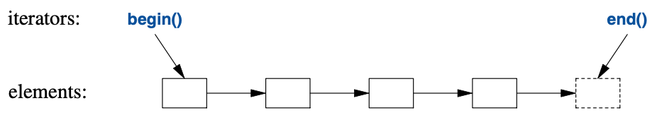
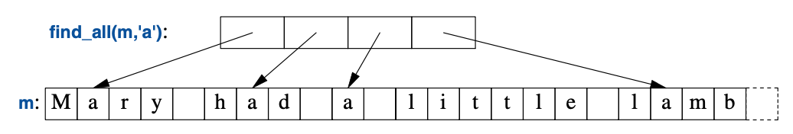
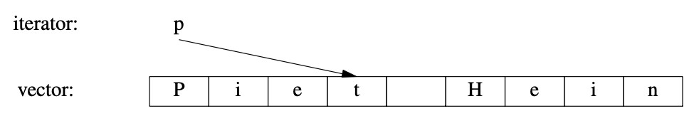
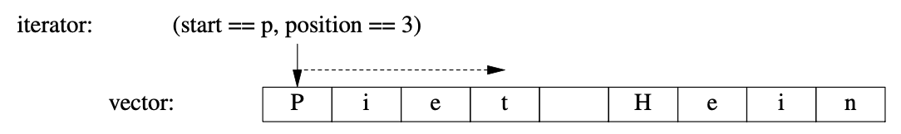
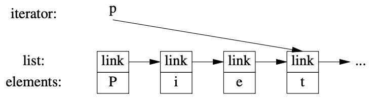

12
算法
若无必要，勿增实体。
—— 威廉·奥卡姆1
12.1 导言
如果单打独斗，vector和list这些数据结构的用途颇为有限。
使用时，我们需要添加和删除元素这些基本操作（就像list和vector实现的那样）。
不过，使用容器仅仅存储对象的情况寥寥无几。
而是还要排序、打印、提取子集、移除元素、查找对象等等。
相应地，标准库里除了最常见的容器类型之外，还为这些容器提供了最常见的算法。
例如，我们可以简单高效地把持有Entry的vector进行排序，
并为vector中每个不重复的元素在list中创建副本：
void f(vector<Entry>& vec, list<Entry>& lst)
{
sort(vec.begin(),vec.end()); // 用 < 进行排序
unique_copy(vec.begin(),vec.end(),lst.begin()); // 不复制相邻的等值元素
}
要让这段代码运行，必须为Entry定义小于（<）和等于（==）操作。例如：
bool operator<(const Entry& x, const Entry& y) // 小于
{
return x.name<y.name; // 用 name 给 Entry 排序
}
标准算法以元素的（半开）序列的方式表示。 一个序列（sequence）以指向首元素和尾元素后位置的一对迭代器表示：

在本例中，sort()为vec.begin()和vec.end()
定义的 迭代器对 定义的序列排序，该 迭代器对 恰好包括了vector的全部元素。
对于写（输出）操作，仅需指定待写入的首元素位置。
如果有不止一个元素输出，起始元素后的元素会被覆盖。
就是说，要避免出错，lst的元素数量至少跟vec中不重复值的数量一样多。
如果要把不重复元素放进一个新（空的）容器里，应该这么写：
list<Entry> f(vector<Entry>& vec)
{
list<Entry> res;
sort(vec.begin(),vec.end());
unique_copy(vec.begin(),vec.end(),back_inserter(res)); // 添加到 res 尾部
return res;
}
back_inserter(res)这个调用为res在容器末尾构造一个迭代器，
并且用它添加这些元素，为它们扩展容器以便提供存储空间。
这样我们就盛事了，不必去先分配一块固定容量的空间，而后再填充它。
于是，标准容器加上back_inserter()消灭了对realloc()
——这个易出错的显式C-风格内存管理——的需求。
标准库容器list有个转移构造函数（§5.2.2），
它可以令res的传值返回变得高效（哪怕是装载着成千上万元素的list）。
如果你觉得这个 迭代器对 风格的代码
——例如sort(vec.begin(),vec.end())——繁琐，
还可以定义容器版本的算法，然后这么写sort(vec)（§12.8）。
12.2 迭代器应用
对于某个容器，有几个指向特定元素的迭代器可以获取；
begin()和end()就是这种例子。
另外，很多算法也会返回迭代器。
例如，标准算法find()在某个序列中查找一个值并返回指向该元素的迭代器：
bool has_c(const string& s, char c) // s 是否包含字符 c ？
{
auto p = find(s.begin(),s.end(),c);
if (p!=s.end())
return true;
else
return false;
}
与很多标准库查找算法相似，find()返回end()以表示“未找到（not found）”。
一个等价且更简短的has_c()定义是：
bool has_c(const string& s, char c) // s 是否包含字符 c ？
{
return find(s.begin(),s.end(),c)!=s.end();
}
一个更有意思的练习是找到一个字符在某字符串中出现的所有位置。
我们可以返回以承载 string迭代器 的vector，以表示的出现位置集合。
返回vector是高效的，因为它提供了转移语意（§5.2.1）。
如果我们想对找到的位置进行修改，就需要传入 非-const 字符串：
vector<string::iterator> find_all(string& s, char c) // 查找s中出现的所有c
{
vector<string::iterator> res;
for (auto p = s.begin(); p!=s.end(); ++p)
if (*p==c)
res.push_back(p);
return res;
}
我们用一个常规的循环在这个字符串中进行遍历，
借助++每次把迭代器p向容器尾部移动一个元素，
并借助解引用操作符*查看这些元素。可以这样测试find_all()：
void test() {
string m {"Mary had a little lamb"};
for (auto p : find_all(m,'a'))
if (*p!='a')
cerr << "a bug!\n";
}
上面的find_all()调用可图示如下：

对于每个合乎情理的使用情形而言，迭代器和标准算法在所有标准容器上的应用都是等效的。
因此，可以这样泛化find_all()：
template<typename C, typename V>
vector<typename C::iterator> find_all(C& c, V v) { // 查找v中出现的所有c
vector<typename C::iterator> res;
for (auto p = c.begin(); p!=c.end(); ++p)
if (*p==v)
res.push_back(p);
return res;
}
为了让编译器知道C的iterator应该被推断为类型而非一个值，比方说整数7，
那个typename是必须的。
可以为iterator引入一个类型别名（§6.4.2）以隐藏这个实现细节：
template<typename T>
using Iterator = typename T::iterator; // T的迭代器
template<typename C, typename V>
vector<Iterator<C>> find_all(C& c, V v) // 查找v中出现的所有c
{
vector<Iterator<C>> res;
for (auto p = c.begin(); p!=c.end(); ++p)
if (*p==v)
res.push_back(p);
return res;
}
现在可以这样写：
void test()
{
string m {"Mary had a little lamb"};
for (auto p : find_all(m,'a')) // p是个 string::iterator
if (*p!='a')
cerr << "string bug!\n";
list<double> ld {1.1, 2.2, 3.3, 1.1};
for (auto p : find_all(ld,1.1)) // p是个 list<double>::iterator
if (*p!=1.1)
cerr << "list bug!\n";
vector<string> vs { "red", "blue", "green", "green", "orange", "green" };
for (auto p : find_all(vs,"red")) // p是个 vector<string>::iterator
if (*p!="red")
cerr << "vector bug!\n";
for (auto p : find_all(vs,"green"))
*p = "vert";
}
迭代器的作用是分离算法和容器。
算法通过迭代器操作数据，并对元素所在的容器一无所知。
反之，容器对操作元素的算法也是不知所以；
它所做的不过是按需提供迭代器（即begin()和end()）而已。
这种把数据存储和算法分离的模型催生出了泛化且灵活的软件。
12.3 迭代器类型
到底什么是迭代器？任何迭代器都是某种类型的一个对象。
只不过，有着很多种不同的迭代器类型，
因为一个迭代器需要为特定的容器类型保存作业所需的信息。
这些迭代器类型可以像容器那般多种多样，还可以按实际情况进行特化。
例如，vector的迭代器可以是普通的指针，
因为需要指向vector元素的时候，指针是个相当合理的的方式：

或者，vector迭代器也可以实现为指向vector的指针外加一个索引：

使用这种迭代器可以进行越界检查。
list迭代器不得不比指向元素的指针更复杂一些，
因为一般来说list的元素并不知道该list中下一个元素在哪儿。
因此，list的迭代器有可能是个指向节点的指针：

所有迭代器共通的部分是它们的语意和操作的命名。
例如，对任何迭代器应用++都会得到指向指向下一个元素的迭代器。
类似地，用*可以得到该迭代器指向的元素。
实际上，任何对象，只要符合几个诸如此类的简单规则就是一个迭代器
——迭代器（Iterator）是个概束（§7.2，§12.7）。
另外，用户极少需要知道具体迭代器的类型；每个容器都“知道”它自己迭代器类型，
并按惯例以iterator和const_iterator为名称提供它们。
例如，list<Entry>::iterator就是list<Entry>的通用迭代器类型。
我们几乎没必要操心该类型定义的细节。
12.4 流迭代器
在处理容器中的元素序列时，迭代器是个通用且便利的概念。 但是，容器并非元素序列栖身的唯一所在。 例如，一个输入流产生一个值序列，另外，我们会向输出流写入值序列。 所以，迭代器的概念在输入和输出方面的应用也颇为有益。
要得到一个ostream_iterator，需要指定使用的流以及待写入对象的类型。
例如：
ostream_iterator<string> oo {cout}; // 向cout写入string
给*oo赋值待结果就是把该值写入到cout。例如：
int main()
{
*oo = "Hello, "; // 意思是cout<<"Hello, "
++oo;
*oo = "world!\n"; // 意思是cout<<"world!\n"
}
这是另一种将规范化消息写向标准输出的方式。
++oo模拟了利用指针向数组写入的行为。
类似地，istream_iterator允许我们把一个输入流作为只读容器使用。
同样，还是要指定使用的流和待读取对象的类型：
istream_iterator<string> ii {cin};
输入迭代器通常成对出现来表示一个序列，
因此还需要提供一个istream_iterator以表示输入的末尾。
这就是默认的istream_iterator：
istream_iterator<string> eos {};
一般来说，istream_iterator和ostream_iterator不会直接拿来就用。
而是会作为参数传递给算法去使用。
例如，可以写个简单的程序读取文件，把读到的单词排序、去重，
然后把结果写入到另一个文件：
int main()
{
string from, to;
cin >> from >> to; // 获取源文件名和目标文件名
ifstream is {from}; // 以"from"文件作为输入流
istream_iterator<string> ii {is}; // 流的输入迭代器
istream_iterator<string> eos {}; // 输入截止信号
ofstream os {to}; // 以"to"文件作为输出流
ostream_iterator<string> oo {os,"\n"}; // 流的输出迭代器
vector<string> b {ii,eos}; // b 是个以输入流初始化的vector
sort(b.begin(),b.end()); // 给缓存排序
unique_copy(b.begin(),b.end(),oo); // 把缓存复制到输出流，丢弃重复的值
return !is.eof() || !os; // 返回错误状态（§1.2.1， §10.4）
}
ifstream是个可附着到文件上的istream，
而一个ofstream是个可以附着到文件的ostream（§10.7）。
ostream_iterator的第二个参数用于分隔输出值。
实际上，此程序没必要写这么长。
我们将字符串读取到vector，然后给它们sort(),继而去重再输出。
更优雅的方案是根本不存储重复值。
要做到这一点，可以把string存储在set中，
set不会保存重复的值，并且会维持元素的顺序（§11.4）。
这样，可以把使用vector的两行代码以使用set的一行取代，
并使用更简单的copy()取代unique_copy()：
set<string> b {ii,eos}; // 从输入流收集字符串
copy(b.begin(),b.end(),oo); // 把缓存复制到输出流
ii、eos和oo都只用了一次，因此可以进一步缩减程序的代码量：
int main()
{
string from, to;
cin >> from >> to; // 获取源文件名和目标文件名
ifstream is {from}; // 以"from"文件作为输入流
ofstream os {to}; // 以"to"文件作为输出流
set<string> b {istream_iterator<string>{is},istream_iterator<string>{}}; // 读输入流
copy(b.begin(),b.end(),ostream_iterator<string>{os,"\n"}); // 复制到输出流
return !is.eof() || !os; // 返回错误状态（§1.2.1， §10.4）
}
至于最后一步简化是否提高可读性，取决于个人偏好和经验。
12.5 谓词
到目前为止，例子中的算法对序列中的元素执行简单的“内建（built in）”操作。
但是，我们经常需要把这个操作作为参数传给算法。
比方说，算法find（§12.2，§12.6）提供了便捷的方式查找特定的值。
有个更通用的变体可以查找一个符合特定条件——谓词（predicate）——的元素。
例如，我们可能需要在一个map里查找第一个大于42的值。
map对其元素以(key,value)对的序列的方式提供访问，
因此，可以在map<string,int>查找一个其int大于42的pair<const string,int>：
void f(map<string,int>& m)
{
auto p = find_if(m.begin(),m.end(),Greater_than{42});
// ...
}
此处，Greater_than是个函数对象（§6.3.2）持有42以便用于比对操作：
struct Greater_than {
int val;
Greater_than(int v) : val{v} { }
bool operator()(const auto& r) const { return r.second>val; }
};
此外，还可以使用lambda表达式（§6.3.2）：
auto p = find_if(m.begin(), m.end(), [](const auto& r) { return r.second>42; });
谓词不能对其访问的元素进行修改。
12.6 算法概览
算法的通用定义是 “由规则组成的有限集合，这些规则为解决一组特定问题规定一系列操作，（并）具有五个重要特性： 有限性……确定性……输入……输出……高效性” [Knuth,1968,§1.1]。 在C++标准库的语境里，算法是一个对元素序列执行操作的函数模板。
标准库提供了数十种算法。这些算法定义在命名空间std中，
呈现在<algorithm>头文件里。
这些标准库算法全都以序列作为输入。
一个从b到e的半开区间序列表示为[b:e)。
以下是几个范例：
|
部分标准库算法 <algorithm> |
|
|---|---|
f=for_each(b,e,f) |
为[b:e)中的每个元素执行f(x) |
p=find(b,e,x) |
p是[b:e)中第一个满足*p==x的p |
p=find_if(b,e,f) |
p是[b:e)中第一个满足f(*p)的p |
n=count(b,e,x) |
n是[b:e)中满足*q==x的元素*q的数量 |
n=count_if(b,e,f) |
n是[b:e)中满足f(*q)的元素*q的数量 |
replace(b,e,v,v2) |
在[b:e)中用v2替换满足*q==v的元素*q |
replace_if(b,e,f,v2) |
在[b:e)中用v2替换满足f(*q)的元素*q |
p=copy(b,e,out) |
从[b:e)复制到[out:p) |
p=copy_if(b,e,out,f) |
从[b:e)复制满足f(*q)的元素*q到[out:p) |
p=move(b,e,out) |
从[b:e)移动到[out:p) |
p=unique_copy(b,e,out) |
从[b:e)复制到[out:p)；相邻的重复元素不复制 |
sort(b,e) |
以<作为排序依据，对[b:e)中的元素进行排序 |
sort(b,e,f) |
以f作为排序依据，对[b:e)中的元素进行排序 |
(p1,p2)=equal_range(b,e,v) |
[p1:p2)是有序序列[b:e)中值为v的子序列；大体上就是针对v的二分查找 |
|
部分标准库算法 <algorithm>（续表） |
|
|---|---|
p=merge(b,e,b2,e2,out) |
把[b:e)和[b2:e2)两个有序序列和并进[out:p) |
p=merge(b,e,b2,e2,out,f) |
把[b:e)和[b2:e2)两个有序序列和并进[out:p)，以f作为比对依据 |
此处和许多其它的算法（见 §14.3），可应用于容器、string以及内建数组的元素。
有些算法，例如replace()和sort()，修改元素值，
但不存在将容器元素增加或减少的算法。
原因是，一个序列并不知道持有此元素序列的是什么容器。
要增加或删除元素，你需要某个了解该容器的事物（比方 back_inserter；§12.1）
或者直接在容器上进行操作（即 push_back()或erase()；§11.2）。
Lambda表达式经常作为操作以参数的形式传递，例如：
vector<int> v = {0,1,2,3,4,5};
for_each(v.begin(),v.end(),[](int& x){ x=x*x; }); // v=={0,1,4,9,16,25}
相较于手工书写的循环，标准库算法通常更谨慎、更有针对性地进行设计和实现， 因此，请了解并使用它们，以避免重复造轮子。
12.7 概束
在C++20中，标准库算法会被指定概束（第7章）。
相关的初期准备工作请参考 Ranges Technical Specification[RangesTS]。
其具体实现可以在互联网上找到。
对于C++20，区间这个概束定义在<ranges>中。
Range是针对 通过begin()/end()定义的C++98序列 的一个泛化。
Range是个指定元素序列概念的概束。它的定义包括：
- 一个迭代器的
{begin,end}对 - 一个
{begin,n}对，其中begin是个迭代器，n是元素数量 - 一个
begin,pred对，其中begin是个迭代器，pred是个谓词； 如果对于迭代器p来说，pred(p)为true， 我们就到达了序列的末尾。 这给了我们数不清的序列，并且序列可以“随时按需（on the fly）”生成。
Range这个概束让我们可以用sort(v)取代sort(v.begin(),v.end())，
后者是STL自1994年开始的使用方式。例如：
template<BoundedRange R>
requires Sortable<R>
void sort(R& r)
{
return sort(begin(r),end(r));
}
Sortable的关系默认是less。
一般来说，在标准库算法要求用一对迭代器表示某个序列的地方，
C++20就允许使用一个Range作为简化的替代写法。
除Range之外，C++20还提供许多便利的概束。
这些概束定义在头文件<ranges>、<iterator>和concepts中。
|
核心语言概束<concepts> |
|
|---|---|
Same<T,U> |
T和U是相同的类型 |
DerivedFrom<T,U> |
T继承自U |
ConvertibleTo<T,U> |
一个T可以转化成一个U |
CommonReference<T,U> |
T和U的共通引用类型相同 |
Common<T,U> |
T和U的共通类型相同 |
Integral<T> |
T是个整数类型 |
SignedIntegral<T> |
T是个有符号整数类型 |
UnsignedIntegral<T> |
T是个无符号整数类型 |
Assignable<T,U> |
U可以赋值给T |
SwappableWith<T,U> |
T和U可以被std:swap() |
Swappable<T> |
SwappableWith<T,T> |
对于某些算法，需要在应用于多个相关类型的时候具备数学上的合理性，
Common在定义这些算法的时候就很重要。
Common<T,U>是指某个类型C，可以把T和U都先转换成C进行比对。
例如，当我们可能想要把std::string跟C-风格字符串（char*），
或者把int跟double进行比对，但不会把std::string和int进行比对。
在用于定义Common时，为确定common_type_t的特化，适宜的方式为：
using common_type_t<std::string,char*> = std::string;
using common_type_t<double,int> = double;
Common的定义略有点棘手，但解决了一个很难的基本问题。
幸运的是，除非需要进行操作的混合类型在库中（尚）无适当的定义，
我们无需为common_type_t定义一个特化。
在定义那些需要对不同的类型做比对的概束和算法时，
多数都用到了Common或CommonReference。
与比对相关的概束受到了来自 [Stepanov,2009] 的重要影响：
|
比对相关的概束<concepts> |
|
|---|---|
Boolean<T> |
T可用作布尔类型（Boolean） |
WeaklyEqualityComparableWith<T,U> |
T与U可使用==和!=进行相等性比对 |
WeaklyEqualityComparable<T> |
WeaklyEqualityComparableWith<T,T> |
EqualityComparableWith<T,U> |
T和U可使用==做等价性比对 |
EqualityComparable<T> |
EqualityComparableWith<T,T> |
StrictTotallyOrderedWith<T,U> |
T和U可使用
<、<=、
>和>=
进行比对，得出全序关系
|
StrictTotallyOrdered<T> |
StrictTotallyOrderedWith<T,T> |
WeaklyEqualityComparableWith和WeaklyEqualityComparable二者的使用，
揭示了（到目前为止一直都）被忽视的重载机会。
|
对象概束<concepts> |
|
|---|---|
Destructible<T> |
T可被销毁且可用一元的&获取其地址 |
Constructible<T,Args> |
T可通过一个Args类型的参数列表构造 |
DefaultConstructible<T> |
T有默认构造函数 |
MoveConstructible<T> |
T有转移构造函数 |
CopyConstructible<T> |
T有拷贝构造函数和转移构造函数 |
Movable<T> |
MoveConstructible<T>、
Assignable<T&,T>和
Swapable<T>
|
Copyable<T> |
CopyConstructable<T>、
Movable<T>和
Assignable<T,const T&>
|
Semiregular<T> |
Copyable<T>和
DefaultConstructable<T>
|
Regular<T> |
SemiRegular<T>和
EqualityComparable<T>
|
Regular是类型的理想状态。
Regular类型用起来大体和int差不多，
并且在某个类型的具体应用（§7.2）方面省却了许多操心。
类中默认==的缺失，意味着多数类只能以SemiRegular的形式面世，
尽管它们中的多数都本可以并应该成为Regular。
|
可调用概束<concepts> |
|
|---|---|
Invocable<F,Args> |
F可通过一个Args类型的参数列表调用 |
InvocableRegular<F,Args> |
F可通过一个Args类型的参数列表调用，并
维持等同性
|
Predicate<F,Args> |
F可通过一个Args类型的参数列表调用，返回bool值 |
Relation<F,T,U> |
Predicate<F,T,U> |
StrictWeakOrder<F,T,U> |
可确保
严格弱序
的Relation<F,T,U>
|
对于某个函数f()，如果x==y可导致f(x)==f(y)，
则该函数是维持等同性（equality preserving）的。
严格弱序（strict weak ordering）是标准库针对顺序比对通常的假设，比如<；
如果你觉得有必要了解就查一下（或者点击表格中该名称的链接——译者）。
Relation和StrictWeakOrder仅在语意上有所差别。
我们（目前）还无法在代码层面表示这一差异，因此这两个命名仅体现了我们的意图。
|
迭代器概束<iterators> |
|
|---|---|
Iterator<I> |
I可被++自增或*解引用 |
Sentinel<S,I> |
S是某个Iterator类型的哨兵，
就是说，S是个用于I的值类型的谓词
|
SizedSentinel<S,I> |
S是个哨兵，且可以用-运算符和I运算（即减法运算s-i——译者） |
InputIterator<I> |
I是个输入迭代器，*可用于只读操作 |
OutputIterator<I> |
I是个输出迭代器，*可用于只写操作 |
ForwardIterator<I> |
I是个前向迭代器，支持
multi-pass
|
BidirectionalIterator<I> |
I是个ForwardIterator，支持--
|
RandomAccessIterator<I> |
I是个BidirectionalIterator，
支持+、-、+=、-=和[]
|
Permutable<I> |
I是个ForwardIterator，
并且I支持移动和交换元素
|
Mergeable<I1,I2,R,O> |
可以按Relation<R>把有序序列I2和I2合并入O
|
Sortable<I> |
可以按less把承载I的序列进行排序
|
Sortable<I,R> |
可以按Relation<R>把承载I的序列进行排序
|
对于给定的算法，迭代器的不同类型（分类）可用于选择最优的方式；
见 §7.2.2 和 §13.9.1。对于InputIterator的范例，请参见 §12.4。
哨兵的基本思路是这样的：我们针对某个区间进行迭代，
该区间始自一个迭代器，直到谓词对于某个元素为 true 终止。
这样，一个迭代器p和一个哨兵s就定义了一个区间[p:s(*p)]。
例如，为了遍历以指针作为迭代器的C-风格字符串，
可以为其哨兵定义一个谓词：
[](const char* p) {return *p==0; }
与C++20中的定义相比，此处Mergeable和Sortable的介绍进行了简化。
|
区间概束<ranges> |
|
|---|---|
Range<R> |
R是个区间，由一个起始迭代器和一个哨兵界定 |
SizedRange<R> |
R是个区间，其size可在常数时间内获知 |
View<R> |
R是个区间，其复制、移动和赋值的执行是常数时间 |
BoundedRange<R> |
R是个区间，其迭代器和哨兵的类型一致 |
InputRange<R> |
R是个区间，其迭代器类型符合 InputIterator 的要求 |
OutputRange<R> |
R是个区间，其迭代器类型符合 OutputIterator 的要求 |
ForwardRange<R> |
R是个区间，其迭代器类型符合 ForwardIterator 的要求 |
BidirectionalRange<R> |
R是个区间，其迭代器类型符合 BidirectionalIterator 的要求 |
RandomAccessRange<R> |
R是个区间，其迭代器类型符合 RandomAccessIterator 的要求 |
<ranges>里还有几个其它的概束，但此表也够入门的了。
12.8 容器算法
在等不及 Range 概束的情况下，可以定义我们自己的简化版区间算法。
例如，提供sort(v)这种简短写法取代sort(v.begin(),v.end())可谓易如反掌：
namespace Estd {
using namespace std;
template<typename C>
void sort(C& c)
{
sort(c.begin(),c.end());
}
template<typename C, typename Pred>
void sort(C& c, Pred p)
{
sort(c.begin(),c.end(),p);
}
// ...
}
我把容器版本的sort()（和其它算法）置于独有的命名空间Estd
（“extended std”）中，以免跟其他程序员对命名空间std的使用产生冲突，
同时还便于将来用Range版本取代这个权宜之计。
12.9 并行算法
当对大量数据项执行同样的操作时，只要针对不同数据项的运算相互独立， 就能够以并行的方式去执行：
- 并行执行（parallel execution）： 任务在多个线程上执行（通常运行在多个处理器核心上）
- 向量化执行（vectorized execution）： 任务在单一线程上以向量化（vectorization）方式执行， 也称作SIMD（“Single Instruction, Multiple Data”）。
标准库对这两种都提供支持，还可以指定顺序执行，在<execution>中有：
seq：顺序执行par：（在可行的情况下）并行执行par_unseq：（在可行的情况下）并行执行 和/或 非顺序（向量化）执行。
以std::sort()为例：
sort(v.begin(),v.end()); // 顺序执行
sort(seq,v.begin(),v.end()); // 顺序执行（与默认方式相同）
sort(par,v.begin(),v.end()); // 并行执行
sort(par_unseq,v.begin(),v.end()); // 并行执行 和/或 向量化执行
至于并行执行 和/或 向量化执行是否划算，要取决于算法、序列中元素的数量、硬件， 以及运行该程序的机器的利用率等等。 因此执行策略标志（execution policy indicators）仅仅是个示意（hint）。 编译器 和/或 运行时调度器将决定在多大程度上采用并发。 这并非无关紧要的小事，此外，“切勿未经测试就对性能下断言”的规则在此处尤为重要。
绝大多数标准库算法，包括 §12.6 表中除equal_range外的全部，
都能像sort()使用par和par_unseq那样被并行化和向量化。
为什么equal_range()不行呢？因为到目前为止，它尚无有益的并行算法。
很多并行算法主要用于数值数据；参见 §14.3.1。
采用并行执行时，请确保避免数据竞争（§15.2）和死锁（§15.5）。
12.10 忠告
- [1] STL 算法可操作一个或多个序列；§12.1。
- [2] 输入序列是由一对迭代器定义的半开区间；§12.1。
- [3] 在进行查找时，算法通常返回输入序列的结尾以表示“未找到”；§12.2。
- [4] 算法不会直接在其参数序列中增添或删减元素；§12.2，§12.6。
- [5] 写循环时，考虑一下能否以一个通用算法实现；§12.2。
- [6] 请使用谓词和其它函数对象为标准算法赋予更广泛的意义；§12.5，§12.6。
- [7] 谓词绝不可修改其参数；§12.5。
- [8] 请通晓标准库算法，并用其代替手写的循环；§12.6。
- [9] 在 迭代器对 的风格显得冗长时，可以引入一个 容器/区间 版本的算法；§12.8。
1. 著名的“奥卡姆剃刀”法则，此处作者可能误会了说这短引言作者的名字，因为其名字应该是“William of Occam”，意思是“奥卡姆这个地方的威廉”，作者的写法里“奥卡姆”是他的姓。该名词有专门的的维基百科页面 —— 译者注 ↩